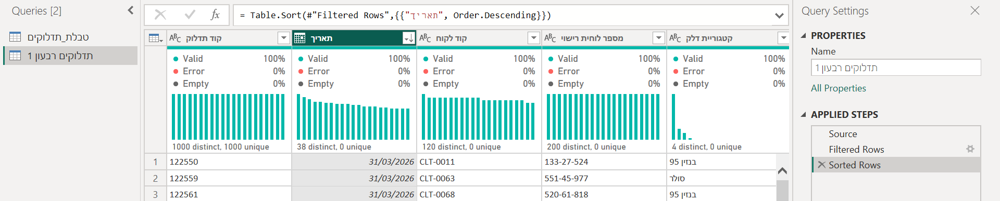
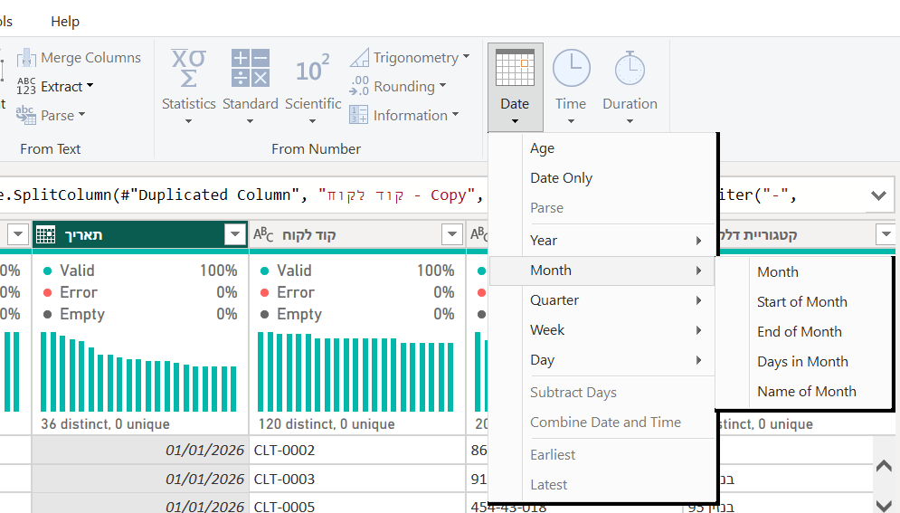
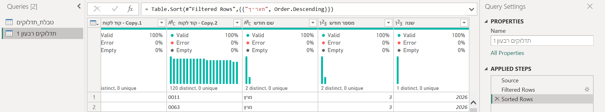
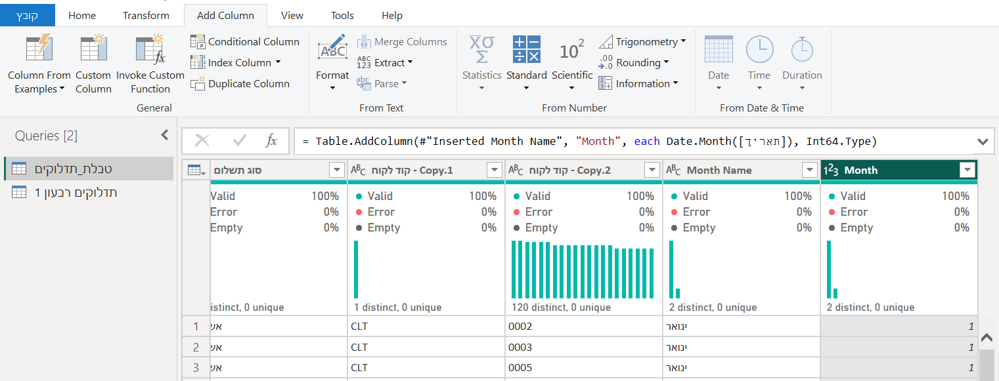
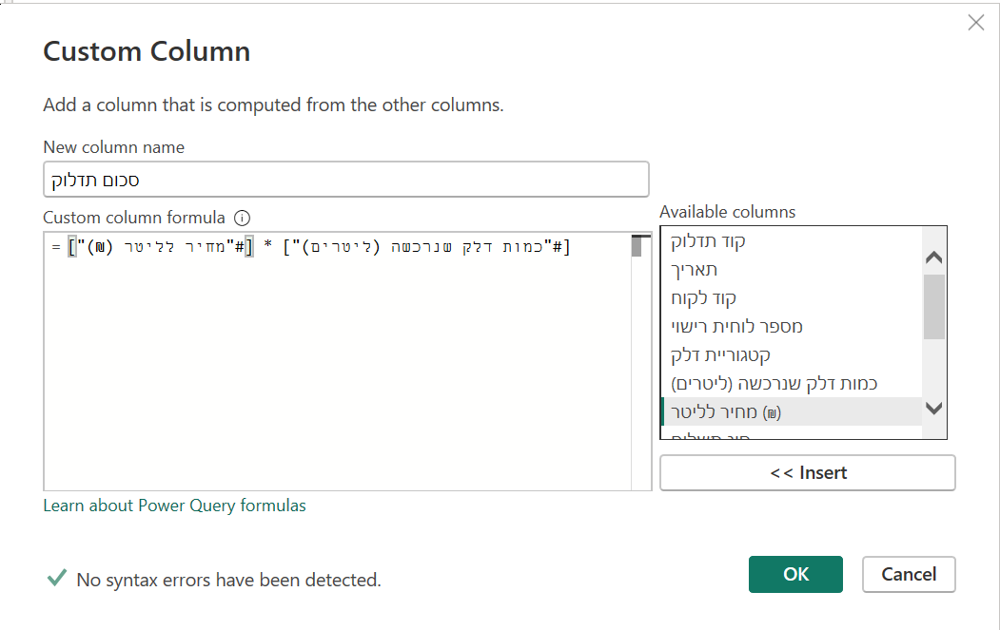
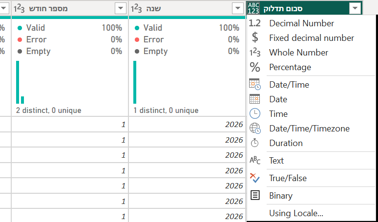
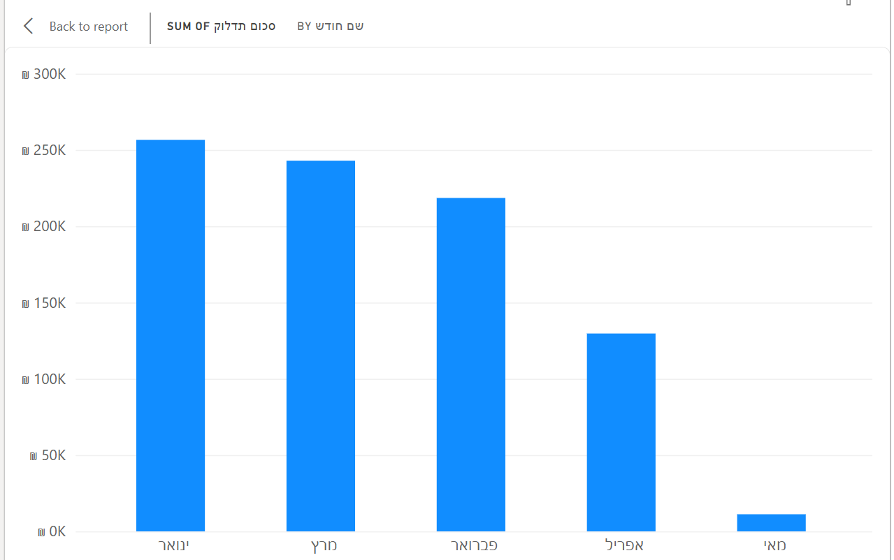
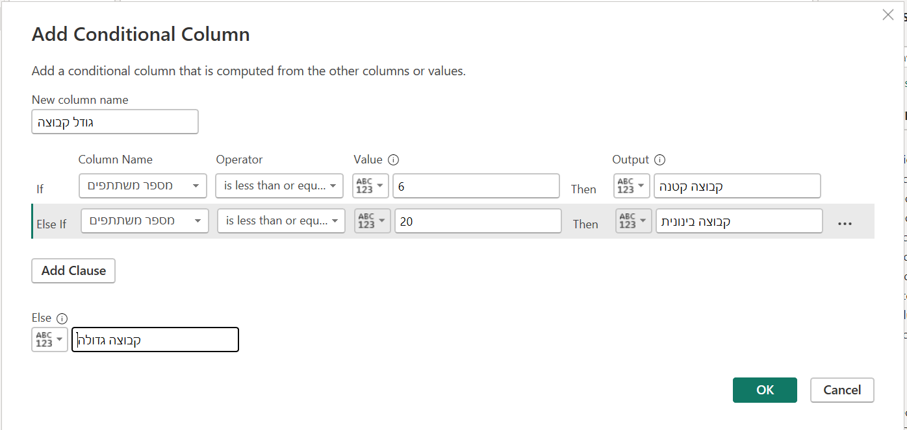
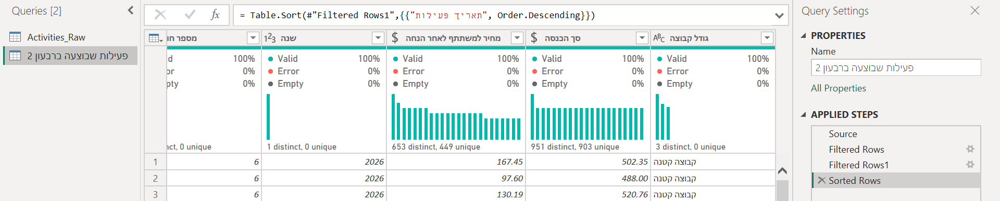
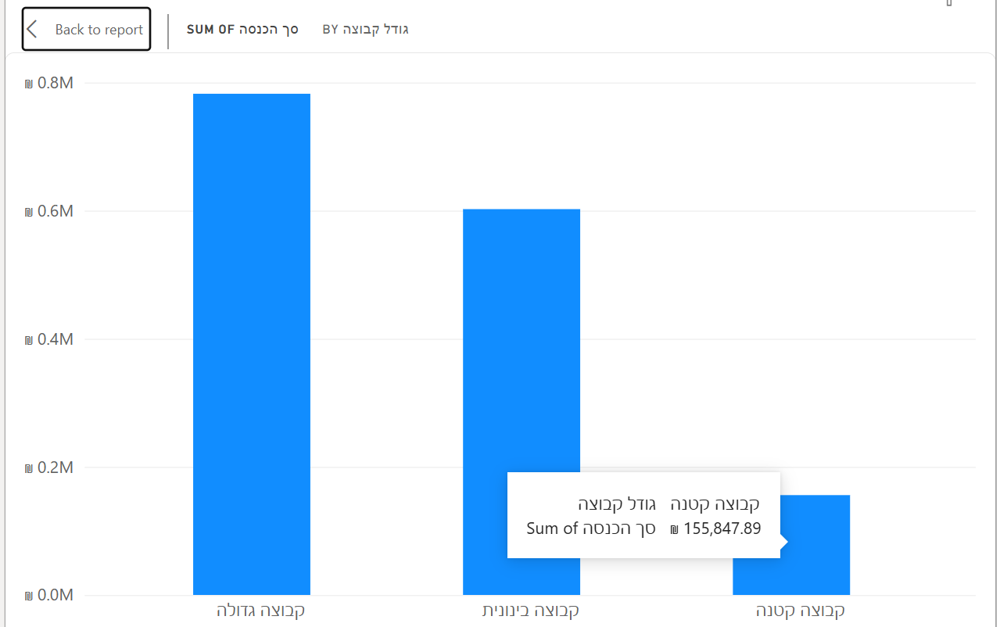

עד היום תיקנו מה שהיה שבור. היום שואלות שאלה אחרת: מה השאלה שלי צריכה, ואין לה עדיין?
רבעון אחד בלבד, שם של חודש, הכנסה אחרי הנחה, ״קבוצה קטנה או גדולה״. את כל אלה בונות בפאוור קוורי, פעם אחת.
שאלה
←
איסוף נתונים
←
טיוב והכנה
←
ניתוח
←
הצגה
←
החלטה
לא היית במיט?
עברי על שלבים 0–1 עם ההקלטה, ואחר כך עשי את כרטיס החדר לבד.
הכרטיס ממשיך את VR.pbix משיעור 5. אין לך אותו? בראש הכרטיס כתוב מה לעשות.
עונות בצ׳אט על שלוש שאלות, ובודקות את עצמכן מול התשובה.
מספר השאלה, ותשובה במשפט אחד. רק אחר כך פותחות את התשובה.
בסוג לקוח יש ״עסקי״ ו״עסקי ״, עם רווח בסוף. מה עושים, ומה Trim לא יעשה?
תשובה
מסמנות את העמודה, ו־Transform › Format › Trim. הוא מוריד רווחים בתחילת הטקסט ובסופו, והשתיים הופכות לקטגוריה אחת.
שני רווחים באמצע הטקסט הוא משאיר, בשונה מ־TRIM של אקסל.
פיצלתן את קוד הלקוח CLT-0002 במפריד -, ובעמודה החדשה כתוב 2. מה קרה, ומה עושות?
תשובה
אחרי Split פאוור BI הוסיף לבד שלב Changed Type, ניחש שזה מספר, והאפסים נעלמו. מוחקות את השלב (ה־X שלידו) והאפסים חוזרים.
לשנות ל־Text אחר כך לא עוזר, כי האפסים כבר נמחקו.
למה משכפלות עמודה לפני שמפצלות אותה?
תשובה
עובדות על העותק (Add Column › Duplicate Column), והעמודה המקורית נשארת שלמה. אם הפיצול הרס משהו, המקור עדיין שם.
✔ זוכרות מה עושים עם טקסט. היום: מוסיפות עמודות שהשאלה צריכה. לשלב 0 ←
שלב 0 · לפני שנכנסותתיקון או הכנה?
יודעות לומר על כל שינוי בנתונים אם הוא תיקון או הכנה, ואיפה עושים אותו.
תיקון ← ״מה היה שבור?״שורה כפולה, 50,000 ליטר, ״עסקי ״ עם רווח. מתקנים בטבלה הראשית, כי זה נכון לכל שאלה.
הכנה ← ״מה השאלה שלי צריכה?״שם של חודש, מחיר אחרי הנחה, גודל קבוצה. שום דבר לא היה שבור, אבל השאלה צריכה עמודה שאין.
שאלה ← עותק״רק רבעון 2, רק מה שבוצע״. זה לא טיוב. זו בחירה בחלק מהנתונים, ולכן עושים אותה בעותק של הטבלה, והטבלה הראשית נשארת שלמה.
Transform מול Add Column. בשיעור 5 ראינו: Transform משנה את העמודה עצמה.
Add Column יוצר עמודה חדשה, והמקור נשאר. הכנה כמעט תמיד היא Add Column: לא נוגעות בתאריך, מוסיפות לידו ״שם חודש״.
בלשונית Add Column יש אותן קבוצות כמו ב־Transform: From Text, From Number, From Date & Time. ולכן גם כאן: קודם מסמנות עמודה.
עותק שמחובר: Reference. קליק ימני על הטבלה ← Reference יוצר שאילתה חדשה, שמתחילה בדיוק איפה שהטבלה הראשית נגמרת.
כל מה שנוסיף אחר כך לטבלה הראשית — עמודה, תיקון — יגיע לעותק לבד. בעותק עושות רק את מה ששייך לשאלה: הסינון והמיון.
מה אמור להופיע?
בשורה העליונה 31/03/2026. ביומן של העותק שלושה שלבים: Source, Filtered Rows, Sorted Rows.
אחרי Close & Apply: בעותק 2,422 שורות, ובטבלה הראשית עדיין 2,901.

המיון הוא גם בדיקה. התאריך העליון אחרי מיון יורד הוא האחרון שעבר את הסינון. 31.3 — הסינון עבד.
למה Reference ולא Duplicate?Duplicate מעתיק את כל השלבים, ומשם כל שאילתה הולכת לבד.
Reference נשאר מחובר: הוא מתחיל מהתוצאה של הטבלה הראשית. בנושא הבא נוסיף עמודות לטבלה הראשית, ונראה אותן מופיעות בעותק בלי לעשות כלום.
1.2עמודות תאריך
בטבלה הראשית שלוש עמודות חדשות: שם חודש, מספר חודש, שנה. והן מופיעות גם בעותק.
איך עושים
חוזרות לטבלה הראשית: קליק עליה בחלונית Queries.
מסמנות את תאריך. Add Column › Date › Month › Name of Month.

מסמנות שוב את תאריך. Add Column › Date › Month › Month.
מסמנות שוב את תאריך. Add Column › Date › Year › Year.
שמות בעברית: מסמנות כותרת, F2, ומקלידות: שם חודש, מספר חודש, שנה.
קליק על העותק, ״תדלוקים רבעון 1״, וגוללות שמאלה עד הסוף.
מה אמור להופיע?
בשם החודש כתוב ינואר, בעברית. בעותק מופיעות שלוש העמודות, אבל ביומן שלו עדיין רק שלושה שלבים.

העמודות נוספו בטבלה הראשית, והגיעו לעותק לבד. זה Reference.
הכפתור Date אפור? אחרי כל עמודה חדשה פאוור BI מסמן אותה, ולא את התאריך. עמודת מספר לא מקבלת פקודות של תאריך.
מסמנות שוב את תאריך, והכפתור חוזר.

מסומנת Month, ו־Date אפור.
למה גם שם וגם מספר? השם לגרף, שיהיה קריא. המספר לסדר: ״מרץ״ לא יודע שהוא בא אחרי ״פברואר״. אבל 3 יודע שהוא בא אחרי 2.
1.3עמודה מחושבת: Custom Column
עמודה חדשה, סכום תדלוק: ליטרים כפול מחיר לליטר, מסוג מספר.
איך עושים
בטבלה הראשית: Add Column › Custom Column. לא צריך לסמן עמודה קודם.
ב־New column name: סכום תדלוק.
ב־Available columns: דאבל־קליק על הכמות (ליטרים). השם נכנס לנוסחה בסוגריים מרובעים.
מקלידות * , ודאבל־קליק על המחיר לליטר.
למטה כתוב No syntax errors have been detected? לוחצות OK.

בכותרת של העמודה החדשה, האייקון הוא ABC/123. קליק עליו ← Fixed decimal number.

ABC/123 הוא ״כל דבר״ (Any). שימו לב: הפרופיל ריק.
מה אמור להופיע?
בשורה הראשונה 246.75. האייקון $, והפרופיל מלא.
ה־= כבר שם. בתחילת שדה הנוסחה מופיע = קבוע. לא מקלידות עוד אחד, ולא מוחקות אותו.
כל עמודה מ־Custom או מ־Conditional יוצאת Any. פאוור BI לא יודע מה יצא מהנוסחה.
הפרופיל ריק, ובדוח אי אפשר לסכם אותה. אחרי כל עמודה כזו — סוג.
1.4עמודה לפי תנאי: Conditional Column
עמודה חדשה, גודל תדלוק, עם שלושה ערכים: תדלוק קטן, תדלוק רגיל, תדלוק מלא.
איך עושים
Add Column › Conditional Column. השם: גודל תדלוק.
שורה ראשונה: Column Name — הכמות (ליטרים). Operator — is less than or equal to. Value — 30. Output — תדלוק קטן.
Add Clause. שורה שנייה: אותה עמודה, אותו אופרטור, 45, ו־תדלוק רגיל.
ב־Else: תדלוק מלא. OK.
האייקון שוב ABC/123. קליק עליו ← Text.
מה אמור להופיע?
האייקון ABC, ובפרופיל 3 distinct.
הסדר קובע. פאוור BI בודק את השורות מלמעלה למטה, ועוצר בראשונה שמתאימה. תדלוק של 20 ליטר עונה גם על ״עד 45״, אבל הוא נעצר ב״עד 30״.
לכן מתחילות מהסף הקטן.
אין ״בין״. באופרטורים אין between. ״בין 30 ל־45״ הוא בדיוק השורה השנייה, כי מה שמתחת ל־30 כבר נעצר בראשונה.
1.5טוענות, ורואות
גרף עמודות: סכום התדלוק לפי שם חודש.
איך עושים
Home › Close & Apply. בחלונית Data יש עכשיו שתי טבלאות: הראשית והעותק.
גרף Clustered column chart. מהטבלה הראשית: שם חודש וסכום תדלוק.
מה אמור להופיע?
חמש עמודות, מינואר עד מאי. אבל לא בסדר הזה:

ינואר, מרץ, פברואר, אפריל, מאי: מהגבוה לנמוך, לא לפי לוח השנה.
הגרף ממיין לפי הגובה. ״מרץ״ לא יודע שהוא בא אחרי ״פברואר״. כאן נכנס מספר חודש מ־1.2: בשלב הדוחות נלמד להגיד לגרף ״סדר לפי המספר, הצג את השם״.
✔ שאלה בעותק, ושלושה סוגי עמודות חדשות. עכשיו אתן, על ה־VR. לשלב 2: כרטיס החדר ←
שלב 2 · בחדרים · בזוגות · כ־25 דקות · פעילות VR · י״אכרטיס החדר: מה הכניס רבעון 2?
המנהלת של רשת חדרי הבריחה שואלת: ברבעון 2, איזה גודל קבוצה הכניס הכי הרבה כסף? בקובץ אין עמודת הכנסה, ואין ״גודל קבוצה״. בונות אותן.
נהגת: משתפת מסך ולוחצת. בת הזוג עושה את אותו הדבר במחשב שלה ומשווה.
מה אמור להופיע?
בשורה הראשונה 104.10 (מחיר 118.3, הנחה 12%). Min 55, Max 188.86. האייקון $.
למה 1 -? אחוז ההנחה כתוב כשבר: 0.12 הוא 12%. משלמים את מה שנשאר: 1 − 0.12 = 0.88 מהמחיר.
2.4סך הכנסה
עמודה בשם סך הכנסה: משתתפים כפול המחיר אחרי הנחה.
איך עושים
Add Column › Custom Column. השם: סך הכנסה.
הנוסחה: [מספר משתתפים] * [מחיר למשתתף לאחר הנחה]. העמודה מ־2.3 נמצאת בסוף הרשימה. OK.
סוג: Fixed decimal number.
מה אמור להופיע?
בשורה הראשונה 1,873.80 (18 משתתפים × 104.10).
2.5גודל קבוצה
עמודה בשם גודל קבוצה, עם שלושה ערכים.
איך עושים
Add Column › Conditional Column. השם: גודל קבוצה.
מספר משתתפים is less than or equal to 6 ← קבוצה קטנה.
Add Clause: מספר משתתפים is less than or equal to 20 ← קבוצה בינונית.
Else: קבוצה גדולה. OK.

סוג: Text.
מה אמור להופיע?
בפרופיל 3 distinct. ובעותק? כל העמודות החדשות שם.

2.6טוענות, ועונות למנהלת
גרף: סך הכנסה לפי גודל קבוצה, ברבעון 2 בלבד. ושתי שורות חדשות בטבלת התיעוד.
איך עושים
Home › Close & Apply.
גרף Clustered column chart. מהעותק, ״פעילות שבוצעה ברבעון 2״: גודל קבוצה וסך הכנסה.
בטבלת התיעוד, שורה לכל עמודה שבניתן. ב״הבעיה״ כותבות ״חסרה עמודה ל…״, וב״למה״: מה השאלה צריכה.
שומרות (Ctrl+S).
מה אמור להופיע?
קבוצה גדולה: ₪ 782,398.22
קבוצה בינונית: ₪ 602,293.79
קבוצה קטנה: ₪ 155,847.89

יצא 2.75 מיליון בסך הכול? הגרף בנוי מהטבלה הראשית. מחליפות לשדות מהעותק.
התשובה למנהלת היא החלטה, לא מספר. ״קבוצות גדולות מכניסות פי חמישה מקטנות״ מוביל לשאלה הבאה: האם לשווק לחברות ולבתי ספר? בעבודה של י״ב זו בדיוק המטרה האנליטית.
המשך המטלה של טל אם נשאר זמן
עמודה בשם קבוצה ופעילות: קוד הקבוצה ושם הפעילות, עם מקף ביניהם.
איך עושים
ב־Activities_Raw מסמנות את קוד קבוצה, ואז, עם Ctrl, את שם פעילות (העמודה שנוצרה מהפיצול בשיעור 5).
יצא הפוך? הסדר נקבע לפי סדר הסימון. ובעברית ואנגלית באותה עמודה, התצוגה עלולה להתהפך גם כשהסדר נכון.
✔ שאלה בעותק, ארבע עמודות חדשות, ותשובה למנהלת. חוזרות למיט.
שלב 3 · 🛠 על העבודה שלכן · 25 דקותבונות את מה שהשאלה צריכה
בתיעוד שלכן יש שורה לכל עמודה חדשה שבניתן: מה השאלה צריכה, ומה בנית.
כל אחת על הקובץ שלה. המורה עוברת ביניכן. נתקעתן? כותבות בצ׳אט, או מסתכלות בנתקעתי.
המסד שלכן י״ב
במסד שלכן שתי עמודות חדשות שמשרתות את שאלת המחקר, ושתיהן מתועדות.
איך עושים
קוראות שוב את שאלת המחקר. שואלות: איזו עמודה הייתי רוצה בגרף, ואין לי?
בוחרות שתיים. רעיונות:
תאריך: שנה, חודש, יום בשבוע (Add Column › Date).
חישוב: יחס, אחוז, סכום של שתי עמודות (Custom Column).
קבוצות: קבוצת גיל, רמת הכנסה, ״מעל או מתחת לממוצע״ (Conditional Column).
בונות אותן בטבלה הראשית, ובודקות את האייקון של כל אחת.
השאלה שלכן מתמקדת בחלק מהנתונים (שנה, מדינה, קבוצה)? עותק עם Reference, והסינון שם.
שורה בטבלת התיעוד לכל עמודה.
שורה לכל עמודה חדשה, בטבלת התיעוד.
ב״למה״: מה השאלה צריכה. זו הכנה, ולא תיקון.
אם סיננתן בעותק: שם העותק, והסינון.
המסד שלכן מגיע בקובץ לכל שנה? קודם מאחדים את הקבצים לטבלה אחת (Append), ורק אחר כך מטייבים, כדי שכל שלב יחול על כל השנים. זה לא בשיעור: הנספח ״איחוד שנים״, ואיתי בזמן הפתוח או בפגישה האישית.
אין לכן עדיין מסד שנפתח ומטויב? עושות את כרטיס החדר עם י״א, ומיישמות על המסד בהמשך.
כרטיס החדר י״א
פעילות VR: עותק, עמודות תאריך, שתי עמודות מחושבות ועמודת קבוצה, וגרף מהעותק.